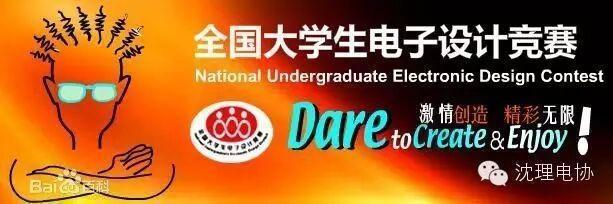

全国大学生电子设计大赛

全国大学生电子设计竞赛
全国大学生电子设计竞赛是教育部和工业和信息化部共同发起的大学生学科竞赛之一，是面向大学生的群众性科技活动，目的在于推动高等学校促进信息与电子类学科课程体系和课程内容的改革。竞赛的特点是与高等学校相关专业的课程体系和课程内容改革密切结合，以推动其课程教学、教学改革和实验室建设工作。
赛题分析编辑
1）电源类：简易数控直流电源、直流稳压电源；
2）信号源类：实用信号源的设计和制作、波形发生器、电压控制LC振荡器等；
3）高频无线电类：简易无线电遥控系统、调幅广播收音机、短波调频接收机、调频收音机等；
4）放大器类：实用低频功率放大器、高效率音频功率放大器、宽带放大器等；
5）仪器仪表类：简易电阻、电容和电感测试仪、简易数字频率计、频率特性测试仪、数字式工频有效值多用表、简易数字存储示波器、低频数字式相位测量仪、简易逻辑分析仪；
6）数据采集与处理类：多路数据采集系统、数字化语音存储与回放系统、数据采集与传输系统；
7）控制类：水温控制系统、自动往返电动小汽车、简易智能电动车、液体点滴速度监控装置。
参赛形式
1、全国大学生电子设计竞赛原则上安排在单数年的9月中旬举行，为期4天。竞赛以赛区为单位统一组织报名、竞赛、评审和评奖工作。
为NEC电子杯本科组获得者颁发NEC电子杯2、鼓励设有信息与电子学科及相关专业或已开展电子设计科技活动的高等学校，积极组织学生参加全国大学生电子设计竞赛。
3、学生自愿组合，三人一队，由所在学校统一向赛区组委会报名。参赛队数由学校自行确定。
4、为鼓励不同类型的高校和不同专业或专业方向的学生都能参加竞赛，全国竞赛专家组根据命题原则，将统一编制若干个竞赛题目，供参赛学生选用。
5、竞赛所需场地、仪器设备、元器件或耗材原则上由参赛学校负责提供。
基本规则编辑
总则
1．指导思想与目的
全国大学生电子设计竞赛是教育部倡导的大学生学科竞赛之一，是面向大学生的群众性科技活动，目的在于推动高等学校促进信息与电子类学科课程体系和课程内容的改革，有助于高等学校实施素质教育，培养大学生的实践创新意识与基本能力、团队协作的人文精神和理论联系实际的学风；有助于学生工程实践素质的培养、提高学生针对实际问题进行电子设计制作的能力；有助于吸引、鼓励广大青年学生踊跃参加课外科技活动，为优秀人才的脱颖而出创造条件。
2．竞赛特点与特色
全国大学生电子设计竞赛全国大学生电子设计竞赛的特点是与高等学校相关专业的课程体系和课程内容改革密切结合，以推动其课程教学、教学改革和实验室建设工作。竞赛的特色是与理论联系实际学风建设紧密结合，竞赛内容既有理论设计，又有实际制作，以全面检验和加强参赛学生的理论基础和实践创新能力。
3．组织运行模式
全国大学生电子设计竞赛的组织运行模式为：“政府主办、专家主导、学生主体、社会参与”十六字方针，以充分调动各方面的参与积极性。
组织领导
4．领导
全国大学生电子设计竞赛由教育部高等教育司和信息产业部人事司共同主办，负责领导全国范围内的竞赛工作。各地竞赛事宜由地方教委（厅、局）统一领导。为保证竞赛顺利开展，组建全国及各赛区竞赛组织委员会和专家组。
5．组织委员会
（1）全国竞赛组织委员会由教育部、信息产业部、部分参赛省市教育主管部门负责人或有关学校专家组成，组委会成员由教育部高等教育司以文函形式任命，每届全国竞赛组织委员会和赛区组委会任期四年。
全国竞赛组委会设立秘书处，设秘书长一人，常务副秘书长一人，副秘书长若干人，主持全国大学生电子设计竞赛的日常工作。
（2）各赛区竞赛组委会由省（自治区）、直辖市教委（厅、局）、高校代表及电子类专家、企事业代表组成，负责本赛区的竞赛组织领导工作。
（3）原则上以省（自治区）、直辖市独立组成一个赛区。若参赛学校少于3所或参赛队少于20个队时，可与邻近省市联合组成一个赛区。
6．专家组
（1）全国只组建一个全国专家组，主要由来自高等学校电子及其相关专业的专家组成，全国专家组由责任专家、专家和专家库成员三个人员层面构成，全国竞赛的命题和评审工作以责任专家为主体。
（2）各赛区成立赛区专家组，由赛区内高校电子及其相关专业的专家组成，负责本赛区的竞赛征题、评审工作。
7．参赛单位
以高等学校为基本参赛单位，参赛学校应成立电子竞赛工作领导小组，负责本校学生的参赛事宜，包括组队、报名、赛前准备、赛期管理和赛后总结等。
8．参赛队和参赛学生
每支参赛队由三名学生组成，具有正式学籍的全日制在校本、专科生均有资格报名参赛。
9．辅导教师
对于赛前辅导教师的辛勤工作，应按照教育部高等教育司下发的《关于鼓励教师积极参与指导大学生科技竞赛活动的通知》（教高司函[2003]165号）精神，承认并计算其工作量。
竞赛时间和方式
10．竞赛时间和竞赛周期
全国大学生电子设计竞赛从1997年开始每二年举办一届，竞赛时间定于竞赛举办年度的9月份，赛期四天。全国大学生电子设计竞赛每逢单数年的9月份举办，赛期四天三夜（具体日期届时通知）。在双数的非竞赛年份，根据实际需要由全国竞赛组委会和有关赛区组织开展全国的专题性竞赛，同时积极鼓励各赛区和学校根据自身条件适时组织开展赛区和学校一级的大学生电子设计竞赛。
11．竞赛方式
竞赛采用全国统一命题、分赛区组织的方式，竞赛采用“半封闭、相对集中”的组织方式进行。竞赛期间学生可以查阅有关纸介或网络技术资料，队内学生可以集体商讨设计思想，确定设计方案，分工负责、团结协作，以队为基本单位独立完成竞赛任务；竞赛期间不允许任何教师或其他人员进行任何形式的指导或引导；竞赛期间参赛队员不得与队外任何人员讨论商量。参赛学校应将参赛学生相对集中在实验室内进行竞赛，便于组织人员巡查。为保证竞赛工作，竞赛所需设备、元器件等均由各参赛学校负责提供。
12.竞赛规则
为保证竞赛工作的顺利进行，应严格遵守全国竞赛组委会届时颁布的《全国大学生电子设计竞赛竞赛规则与赛场纪律》。竞赛期间，各赛区组织巡视人员，严格执行巡视制度。五、竞赛命题与相关规定 竞赛规则：1、参赛学生应是高等学校中具有正式学籍的全日制在校本科或专科学生。2、参赛学生必须按统一时间参加竞赛，按时开赛，准时交卷。各赛区组委会须按时收回学生的答卷(报告和制作实物)并及时封存，然后按规定交赛区专家组评审。3、竞赛期间，参赛学生可以使用各种图书资料和计算机，但不得与队外人员讨论，教师必须回避。4、竞赛期间，各赛区组委会要组织巡视检查，以保证竞赛活动正常进行。5、在竞赛中，如发现辅导教师参与、队与队之间讨论，队员与队外人员讨论、不按规定时间发题和收卷，以及赛前泄题等违纪现象，将取消获奖名次，并通报批评。
13．竞赛题目
竞赛题目是保证竞赛工作顺利开展的关键，应由全国专家组制定命题原则，赛前发至各赛区。全国竞赛命题应在广泛开展赛区征题的基础上由全国竞赛命题专家统一进行命题。全国竞赛命题专家组以责任专家为主体，并与部分全国专家组专家和高职高专学校专家组合而成。
全国竞赛采用两套题目，即本科生组题目和高职高专学生组题目，参赛的本科生只能选本科生组题目；高职高专学生原则上选择高职高专学生组题目，但也可选择本科生组题目，并按本科生组题目的标准进行评审。只要参赛队中有本科生，该队只能选择本科生组题目，并按本科生组题目的标准进行评审。凡不符合上述选题规定的作品均视为无效，赛区不予以评审。
报名、评审和评奖
14．竞赛报名
参赛学校应在广泛开展校内培训与竞赛的基础上选拔出适当数量的优秀代表队报名参赛。每个报名的参赛队必须在报名时按照规则确定本队参赛选题的组别（本科生组或高职高专学生组），开始竞赛时不得更改。各赛区负责本赛区的报名工作，填写全国统一格式的赛区报名汇总表，并在规定的截止时间内上报全国竞赛组委会秘书处备案。
15．评审工作与要求
根据竞赛评奖模式，竞赛评审分赛区和全国两级评审，按本科生组和高职高专学生组的相应标准分别开展评审工作。赛区的竞赛评审工作由赛区组委会组织、赛区专家组执行，需严格按照全国专家组制定的统一评分及测试标准执行，并在全国统一评分及测试标准基础上制定赛区的评分标准及测试细则，每个测试组至少由三位赛区评审专家组成，每位评审专家的原始评分及测试记录必须保留在赛区组委会，赛区向全国组委会推荐申请全国奖代表队时，必须将报奖队的设计报告、有赛区评审组每位评审专家签字的各项详细原始测试数据及评分记录、登记表和推荐表一并上报，否则不受理评奖。各赛区评分及测试细则需要上报全国组委会秘书处备案，以备全国评审时参考。
全国竞赛评审工作原则上由一个专家组在一地完成。全国竞赛评审分为初评和复评两个阶段。全国竞赛组委会负责组成全国竞赛评审专家组，对各赛区按比例推荐上报的优秀代表队的作品，按照命题时制定的全国统一评分及测试标准，参考赛区评审原始记录进行初评。
全国一等奖候选队一律集中在一地参加复评，原则上不再另行命题，以原竞赛题目为基础，由专家组确定测试内容和方式，参加复评的代表队名单以全国竞赛组委会届时公布的有关通知为准。
16．上报全国评审的比例
赛区和全国对参赛规模进行统计时，一律以实际参赛队数量为准。实际参赛队是指已经正式报名并按时向赛区组委会上交参赛作品（含制作实物和设计报告）的参赛队。在赛区评审、评奖的基础上，赛区组委会应按时向全国组委会推荐本赛区的优秀代表队参加全国评审，推荐的队数分别不得超过当年本赛区本科生组和高职高专学生组实际参赛队数量的10%，逾期未上报的不予受理。
17．评奖工作
（1）评奖工作采用“校为基础、一次竞赛、二级评奖”的方式进行，即竞赛建立在学校广泛开展课外科技活动的基础上，积极组织学生参加全国大学生电子设计竞赛活动，每次全国竞赛后，经赛区评奖（第一级评奖）后再推荐出赛区优秀参赛队参加全国评奖（第二级评奖）。
（2）各赛区组委会聘请专家组成赛区评委会，评选本赛区的一、二、三等奖，获奖比例一般不超过总参赛队数的三分之一。此外，对参赛成功者，赛区也可酌情颁发“成功参赛奖”或“成功参赛证书”。
（3）由于各赛区采用的是全国统一制定的竞赛命题和测试评分规则，赛区颁发的获奖证书、奖杯等冠名原则上为“XXXX年XXX杯全国大学生电子设计竞赛XX赛区（本科生组或高职高专学生组）”。
（4）全国分组设立一、二等奖。本科生组和高职高专学生组获奖队数量分别不超过当年实际参赛队的8%，其中一等奖和二等奖的比例原则上为3:7。竞赛颁发全国统一的获奖证书。全国颁发的获奖证书、奖杯等冠名为“XXXX年全国大学生电子设计竞赛（本科生组或高职高专学生组）”。
18．异议制度
为保证全国大学生电子设计竞赛评奖工作的公正性，对全国和赛区的评奖初步结果坚持执行异议制度，“异议期”自公布评审初步结果之日起为期15天，过期不再受理。异议期间，各赛区竞赛组委会和全国竞赛组委会受理参赛队有关违反竞赛章程、竞赛规则和纪律的行为等。异议须以书面形式提出，个人提出的异议，须写明本人的真实姓名、工作单位、通信地址，并有本人的亲笔签名；单位提出的异议，须写明联系人的姓名、通信地址、电话，并加盖公章。赛区竞赛组委会和全国竞赛组委会必须对提出异议的个人或单位严格保密。
全国竞赛组委会充分尊重各赛区的评审及评奖结果，赛区评审中出现的异议由各赛区组委会协调解决。
竞赛经费
19．关于报名费
全国竞赛组委会不向参赛单位和参赛队收取报名费。赛区竞赛组委会应积极办理收费许可，适当收取报名费。参赛单位统一向赛区竞赛组委会交纳报名费，每队的报名费金额由赛区竞赛组委会根据组织工作的需要自行确定，原则上不超过200元。报名费只限用于当年竞赛的组织工作。
20．社会资助
全国和各赛区竞赛组委会可积极争取社会各界的资助。
21．全国竞赛组委会组织开展的全国性专题邀请赛章程有另文细述。
22．本章程的具体解释权归全国大学生电子设计竞赛组织委员会。